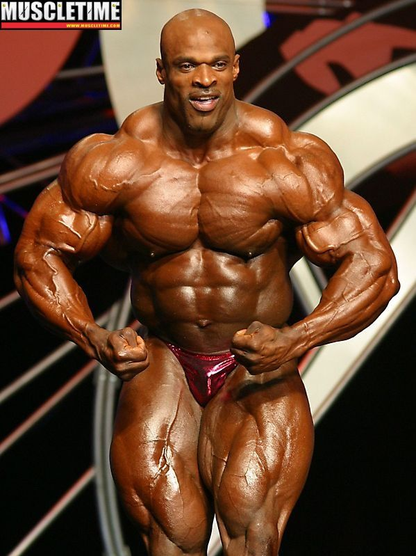
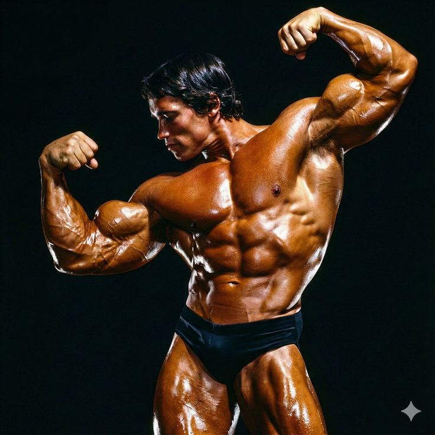
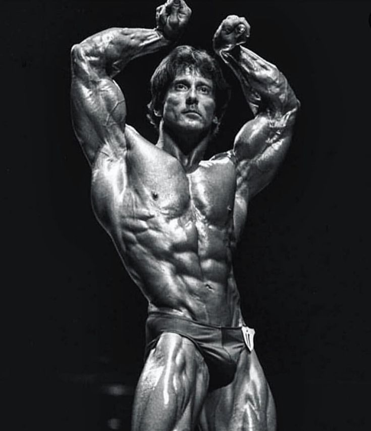
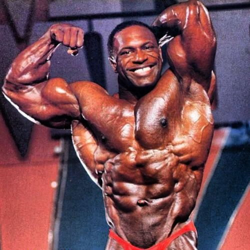
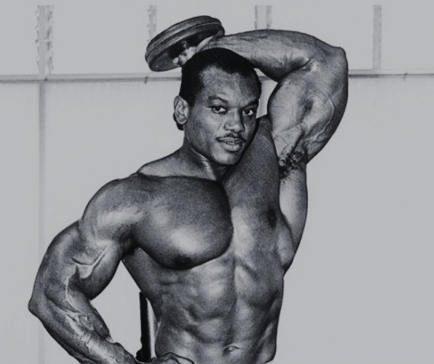

LES LÉGENDES DE LA MUSCULATION

RONNIE COLEMAN
8x Mr. Olympia (1998-2005)
Considéré par beaucoup comme le plus grand bodybuilder de tous les temps, Ronnie Coleman a dominé la scène du bodybuilding pendant près d'une décennie. Avec ses 8 titres consécutifs de Mr. Olympia (record partagé avec Lee Haney), il est une icône absolue. Connu pour sa masse phénoménale et sa densité musculaire hors norme, il soulevait des charges incroyables : 365 kg au soulevé de terre, 320 kg au développé couché. Son mantra "Yeah buddy, light weight baby!" résonne encore dans toutes les salles de sport.

ARNOLD SCHWARZENEGGER
7x Mr. Olympia (1970-1975, 1980)
Plus qu'un bodybuilder, Arnold est une légende planétaire. Arrivé d'Autriche avec un anglais approximatif et des rêves plein la tête, il a révolutionné le sport par son esthétique, sa symétrie parfaite et son charisme sur scène. Ses 7 titres de Mr. Olympia (dont un comeback victorieux en 1980) ont fait de lui une superstar. Il a ensuite conquis Hollywood et la politique, devenant gouverneur de Californie. Son livre "The New Encyclopedia of Modern Bodybuilding" reste une bible. Son héritage perdure avec l'Arnold Classic.

CHRIS BUMSTEAD
5x Mr. Olympia Classic Physique (2019-2023)
Le visage moderne du bodybuilding classique. "Cbum" a redéfini la catégorie Classic Physique avec son esthétique rappelant l'âge d'or d'Arnold et Frank Zane. Avec 5 titres consécutifs, il est devenu une superstar des réseaux sociaux, rassemblant des millions de fans. Sa silhouette élancée, sa taille fine, ses proportions parfaites et son humour ont conquis le monde. Il a hissé la catégorie Classic Physique au même niveau de popularité que l'Open. Son rivalité amicale avec Ramon Dino a marqué les esprits.

FRANK ZANE
3x Mr. Olympia (1977-1979)
Le maître de la symétrie et de la définition. À une époque où la masse devenait reine, Frank Zane a prouvé que l'esthétique et les proportions parfaites pouvaient triompher. Avec sa célèbre taille de guêpe (29 pouces) et ses abdominaux sculptés dans le marbre, il a remporté 3 Mr. Olympia consécutifs. Professeur de mathématiques dans le civil, il abordait la musculation avec une précision scientifique. Il est considéré comme l'un des physiques les plus harmonieux de l'histoire.

LEE HANEY
8x Mr. Olympia (1984-1991)
Avant Ronnie Coleman, il y a eu Lee Haney. Il a établi le premier record de 8 titres Mr. Olympia, dominant les années 80 avec une masse impressionnante alliée à une symétrie remarquable. Son mantra "Stimulate, don't annihilate" (stimule, n'annihile pas) prônait un entraînement intelligent plutôt que du surentraînement. Après sa carrière, il est devenu pasteur et continue d'inspirer. Il a notamment coaché des stars comme Evander Holyfield.

SERGIO OLIVA
3x Mr. Olympia (1967-1969)
Surnommé "The Myth" (le mythe), Sergio Oliva possédait l'une des physiques les plus impressionnantes jamais vues. Avec des bras énormes et une masse dense, il a battu Arnold Schwarzenegger en 1969, le seul à l'avoir fait à son prime. Sa génétique exceptionnelle lui donnait une forme unique, notamment ses bras incroyablement développés. Cubain d'origine, il a fui le régime de Castro pour devenir une légende du bodybuilding.